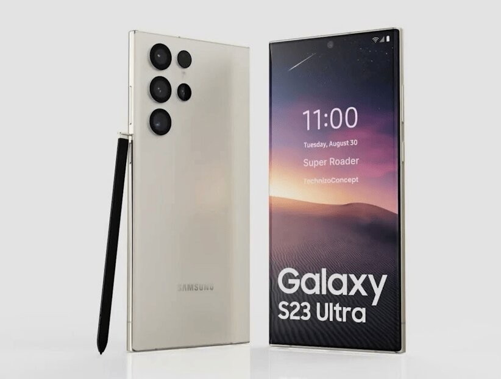

Экран: 6.8" (3088x1440) Dynamic AMOLED 2X 120 Гц
Память: встроенная 1 ТБ, 256 ГБ, 512 ГБ, оперативная 8 ГБ, 12 ГБ
Фото: 4 камеры, основная 200 МП
Аккумулятор: 5000 мА·ч
Процессор: Qualcomm Snapdragon 8 Gen2
SIM-карты: Dual nano SIM, Dual: nano SIM + eSIM
Операционная система: Android 13
Беспроводные интерфейсы: Wi-Fi, Bluetooth, NFC
Стандарт связи: 4G LTE, 5G
Степень защиты: IP68
Вес: 234 г
Издалека Galaxy S23 Ultra выглядит точно как Galaxy S22 Ultra. Отличит только владелец прошлогодней модели, взяв в руки новинку: у нее грани более плоские. Так смартфон удобнее держать. Я боялся переходить на 6,8-дюймовую «ультру» после компактного iPhone 13 Pro. Но Galaxy S23 Ultra удивил: огромный, но удобный. Тяжелый, но сбалансированный. Особенно в восторге будут владельцы «кирпичей» iPhone 13 Pro Max, 14 Pro Max.Можно упрекать Samsung в самокопировании, но возьмите iPhone — там долгие годы эксплуатируется дизайн iPhone 12, вдохновленный iPhone 5. У обеих компаний премиальные линейки, их пользователи не любят радикальные перемены. Перетаскивать блок камер из одного угла в другой, менять его форму — удел китайских брендов, которые изгаляются как могут, лишь бы переманить аудиторию у мастодонтов рынка. Можно ругать Galaxy S23 Ultra и за несимметричные рамки: сверху тоньше, ниже толще. Но я об этом вспомнил, когда искал, к чему бы еще докопаться. В жизни — безразлично, экран тут потрясающий, без скруглений, толщина рамок смешная. Дисплей лишь на пару градусов закругляется по краям, поэтому ложные касания и блики отсутствуют. Стекло загибается назад, что отлично сказывается на эргономике. Кнопки расположены идеально — это сейчас камень в огород Google Pixel 7 Pro, где качелька громкости снизу, а кнопка блокировки сверху.
Голосовой помощник: Маруся от VK
Язык голосового помощника: русский
Экосистема: Ростелеком, Rubetek, Megafon LifeControl, REDMOND, Perenio, Умный дом VK, Philio, UJIN
Питание: от сети
Суммарная мощность: 5 Вт
Протокол связи Умного дома: Wi-Fi, Bluetooth
Беспроводная связь: Wi-Fi, Bluetooth, NFC
Разъемы: Ethernet (RJ-45), вход аудио, выход аудио
Размеры (ШxВxГ): 100x45x100 мм
Вес: 0.305 кг
Особенности: поддержка потоковых аудиосервисов
Поставляется колонка в довольно большой коробке с «суперобложкой», на которой размещены изображения устройства и краткая информация о возможностях голосового помощника. Внутри находится практически полностью белая коробка из плотного картона со съемной крышкой, в которой и размещено устройство. Все элементы комплектации надежно удерживаются пластиковыми ложементами, колонка дополнительно помещена в тканевый мешочек.В комплект входит сама колонка, уже упомянутый тканевый мешок для нее, документация и блок питания. Плюс «нематериальная часть»: подписка на стриминг музыки «ВКонтакте» длительностью в 6 месяцев.Блок питания довольно массивный, его размеры — 140×51×31 см без учета вилки, длина кабеля — 180 см. Внешним оформлением колонка Mail.ru не похожа ни на кого из «коллег», формой она вполне оправдывает название «Капсула». Внешняя часть корпуса почти полностью обтянута тканью, на передней панели расположен крупный круговой индикатор. Выглядит устройство оригинально и интересно, но при этом не привлекает к себе лишнего внимания и будет вполне уместно практически в любом интерьере. Вариантов расцветки анонсировано два: черный и светло-серый.
Электронно-механическое устройство получает команды от пользователя через радиоканал, сети Wi-Fi, GSM или проводного типа.
Принимает команды встроенный компьютер, а нужная информация отображается на сенсорном экране.
Для управления устройством требуется установка приложения на смартфон.
С его помощью вы можете отдавать агрегату нужные команды, даже находясь далеко от дома.
Стандартное холодильное оборудование, которое выполняет ограниченное количество функций,
причем под пристальным контролем владельца, постепенно сдает позиции.
Ему на смену выходят умные холодильники, которые умеют самостоятельно принимать важные для работы решения
и умеют интегрироваться в систему умного дома.
Еще одной отличительной чертой новинки является возможность удаленного управления.
Самодиагностика. Управляющий блок ответственен за определение текущего состояния основных блоков и систем, что позволяет обнаружить неполадки на ранней стадии и своевременно их устранять.
В случае программного сбоя оборудование принимает попытки самостоятельного его исправления.
Если попытка не увенчалась успехом, то владелец получает соответствующее сообщение на телефон с описанием возникшей проблемы;
Наличие камер. Теперь вам не придется во время похода в магазин напряженно думать над тем, какие продукты остались дома, каков их срок годности и что же следует купить.
Достаточно отправить запрос, как процессор передаст приказ камерам, которые сфотографируют содержимое и проинформируют о нем хозяина.
Определение срока годности продуктов требует предварительного внесения данных (названия товара и срока окончания его годности) пользователем в приложение;
Автоматический выбор режима энергопотребления. Если прибор долгое время не открывается, т.е. внутрь не поступает теплый воздух, то активируется функция энергосбережения.
И опять же – владелец тотчас узнает об этом через сообщение на своем телефоне;
Книга рецептов. Запишите любимые рецепты в книгу посредством приложения, а затем получите к ним доступ прямо на экране холодильного оборудования;
Подключение холодильника к умному дому. Для этого применяется домашняя сеть Wi-Fi. В случае ее отключения управляющая система сохраняет способность выполнения всех основных функций.
Тип увлажнителя: ультразвуковой
Расход воды: 250 мл/ч
Объем резервуара для воды: 5 л
Управление: электронное
Дополнительные функции: ионизация, ароматизация
Особенности: регулировка скорости вентилятора/интенсивности испарения, гигростат
Тип: увлажнитель воздуха
Площадь помещения: 40 м²
Цвет: белый
Потребляемая мощность: 25 Вт
Мощность ультразвукового увлажнителя воздуха Neoclima NHL-500-VS составляет 25 Вт. Он имеет сенсорное управление, а его производительность достигает 250 мл/ч. Расход воды при этом составляет 350 г в час. Он предназначен для помещений площадью до 40 м2. Уровень шума при работе не превышает 35 дБ. Объем резервуара для воды составляет 5 л. Реализовано 3 режима интенсивности потока. Непрерывная работа до 12 ч. Имеется встроенный гигростат. Мощность пара и уровень влажности ультразвукового увлажнителя воздуха Neoclima NHL-500-VS можно отрегулировать. Имеется автоматическая поддержка влажности. Таймер устанавливается на период до 12 ч, также есть ночной режим. Изделие обладает индикатором отсутствия воды, если ее нет, оно автоматически отключается. Есть встроенный ионизатор. На информационном дисплее можно отслеживать сведения о работе устройства. Предлагается удобное дистанционное управление. Основной цвет пластикового корпуса белый, добавлены черные элементы. Весит модель всего 1,32 кг, ее размеры - 200х300х200 мм.